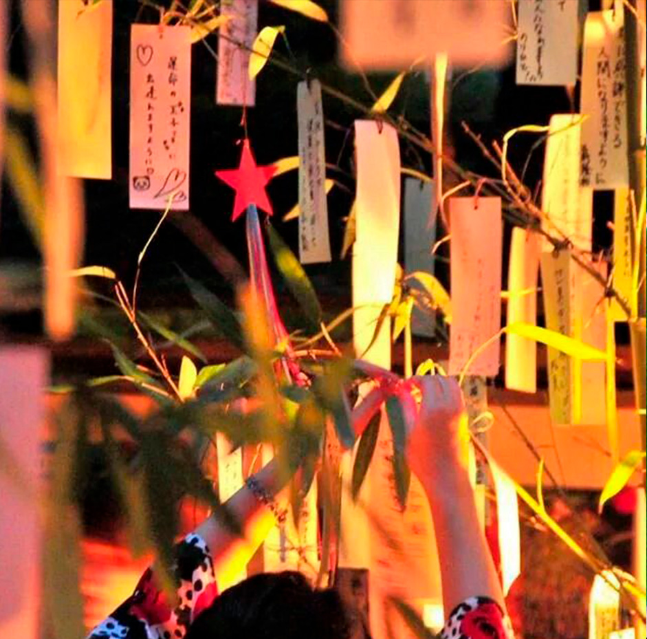
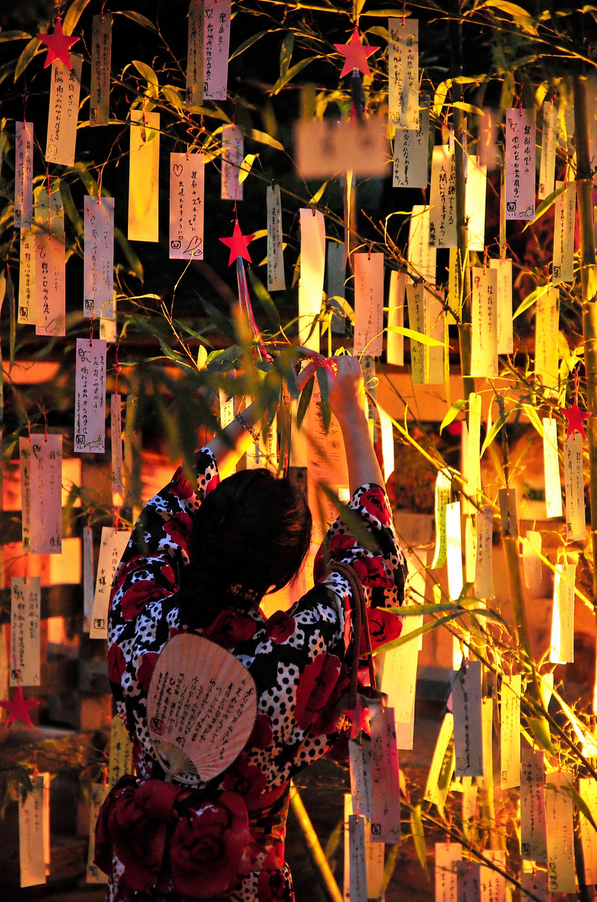
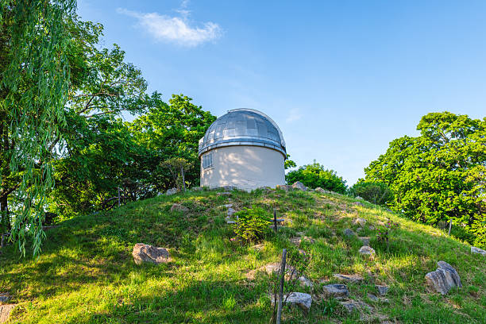
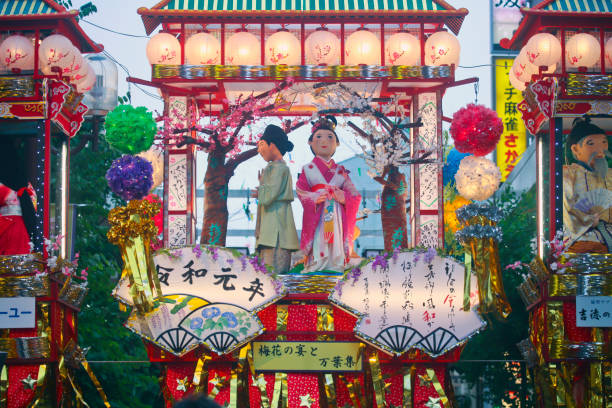
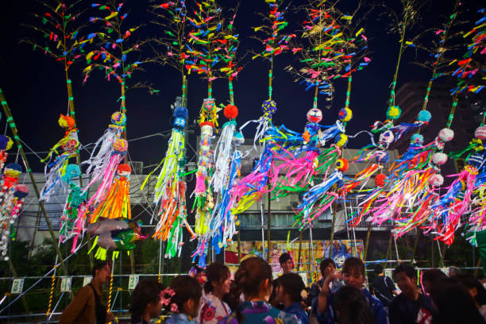

Experiencias bajo las estrellas
Festival de tanabata, Japon
Descripción
Un viaje cultural y astronómico al corazón de Japón durante una de sus festividades más simbólicas.
Cinco días y cuatro noches.
En esta experiencia, el destino estará centrado en el Festival de Tanabata, una celebración
tradicional japonesa que une la astronomía, la mitología y la cultura popular. El viaje se
desarrollará en la región de Sendai.
Durante la experiencia se explorará cómo la cultura japonesa ha interpretado el cielo a lo largo de la historia, desde la astronomía tradicional utilizada para medir estaciones y cosechas, hasta la influencia de la astrología en festividades, templos y creencias populares. También se estudiará la relación entre la Luna y el calendario japonés, así como su papel en celebraciones tradicionales como el Tsukimi (observación de la Luna).
El viaje incluirá visitas a museos de ciencia y astronomía en Japón, donde se muestran avances tecnológicos del país en exploración espacial, observación del universo y desarrollo de telescopios de alta precisión. Además, se realizarán actividades nocturnas de observación del cielo japonés, combinando ciencia con relatos mitológicos y culturales. Durante el festival, las calles se llenan de decoraciones de papel, deseos escritos en tiras de colores y celebraciones que mezclan tradición y modernidad, creando una atmósfera única donde el cielo y la cultura se unen.
Estadía en : hotel en Sendai, situado en una zona céntrica con fácil acceso a las celebraciones del Festival de Tanabata y a transporte hacia museos y centros culturales.
Precio del viaje : 2.150 € por persona. Incluye vuelos de ida y vuelta a Japón, alojamiento durante cinco días y cuatro noches, desayuno, visitas guiadas a museos de astronomía, actividades culturales del festival y sesiones de observación astronómica nocturna.
Descubre más sobre los pioneros en el espacio
El Festival de Tanabata tiene su origen en una antigua leyenda japonesa basada en dos estrellas, Vega y Altair, separadas por la Vía Láctea y reunidas una vez al año, el séptimo día del séptimo mes.
Itinerario
Día 1 - Llegada a Sendai
Traslado, alojamiento y paseo cultural · 15:00 - 21:30
La experiencia comienza con el vuelo hacia Japón y la llegada a la región de Sendai, uno de los principales escenarios del Festival de Tanabata. Tras el traslado al hotel céntrico, los viajeros realizarán el check-in y dispondrán de tiempo para descansar tras el viaje.
Por la tarde se realizará un primer paseo por la ciudad, donde las calles ya estarán decoradas con los tradicionales adornos de papel y tiras de deseos del festival. Esta primera toma de contacto permitirá comprender la mezcla entre tradición, cultura popular y astronomía que define esta celebración.
Día 2 - Cultura japonesa y astronomía tradicional
Museos, historia del cielo y Sendai · 09:00 - 20:30
La jornada estará dedicada a descubrir cómo Japón ha interpretado el cielo a lo largo de su historia. Se visitarán museos de ciencia y astronomía donde se explican los avances tecnológicos del país en la exploración espacial, el desarrollo de telescopios y la observación del universo.
Durante el día también se profundizará en la astronomía tradicional japonesa, el uso del cielo para medir estaciones y cosechas, y la influencia de la Luna en el calendario japonés. Se explicarán además festividades como el Tsukimi, centrado en la observación lunar.

Día 3 - Festival de Tanabata en su máximo esplendor
Celebración cultural y mitología estelar · 10:00 - 22:30
Este día estará dedicado al corazón del viaje: el Festival de Tanabata. Las calles de Sendai se llenarán de decoraciones, colores y deseos escritos en tiras de papel, creando una atmósfera única que mezcla tradición y modernidad.
Durante la jornada se explicará la leyenda de las estrellas Orihime y Hikoboshi, así como su relación con la Vía Láctea y la astronomía simbólica en la cultura japonesa. Por la noche, el ambiente festivo permitirá disfrutar del espectáculo cultural y su conexión con el cielo estrellado.

Día 4 - Observación astronómica del cielo japonés
Sesión nocturna guiada y ciencia del universo · 09:30 - 23:30
El día comenzará con actividades culturales más tranquilas en Sendai y tiempo libre para seguir explorando el festival o visitar zonas cercanas. Se aprovechará también para profundizar en la relación entre mitología japonesa y astronomía moderna.
Al caer la noche se realizará una sesión de observación astronómica guiada, donde se estudiará el cielo japonés con explicaciones científicas y relatos tradicionales. Se combinará la visión moderna del universo con las antiguas interpretaciones culturales del cielo.

Día 5 - Últimas horas en Japón y regreso
Desayuno, tiempo libre y vuelo de vuelta · 08:00 - 14:00
La última mañana estará destinada al desayuno en el hotel y a un breve tiempo libre para compras o paseos finales por Sendai, disfrutando de los últimos detalles del festival.
Posteriormente se realizará el traslado al aeropuerto para tomar el vuelo de regreso, cerrando una experiencia única donde astronomía, cultura y tradición japonesa se unen bajo el cielo de Tanabata.


Nota importante: Los programas descritos son susceptibles de cambios por razones puntuales ajenas a nuestra organización, tales como condiciones meteorológicas o de seguridad.
Observaciones
- Si alguien tiene alergia o intolerancia a algún tipo de alimento deberá comunicarlo a la agencia para prever incidentes inesperados que cundan el panico.
- Si alguien tiene algún tipo de enfermedad que afecte a la respiración, resistencia o movimiento, deberá comunicarlo a la agencia para prever una mayor seguridad y adaptación.
- Si traen menores de edad o acompañan a personas con necesidades especiales, manténganse pendientes de ellos y no se separen en ningún momento. Recuerden presentárselos a los guías e informarles de todo lo necesario que deban tener en cuenta.
- Cualquier siniestro sucedido durante el viaje o emergencia médica será responsabilidad económica de la propia persona afectada. Los costes correrán por cuenta del viajero. Se le acompañará o transportará a la zona de asistencia médica más cercana y, si es posible, el grupo continuará su recorrido.Si el viajero se recupera a tiempo para el regreso, será reincorporado al viaje. En caso de que no sea posible, deberá ponerse en contacto con sus familiares, amigos u otras personas de confianza para poder regresar a su hogar cuando esté recuperado.
Gastos de anulación según fecha de salida
| HASTA | IMPORTE |
|---|---|
| Más de dos meses de anticipación | 0% |
| Un mes de anticipación | 40% |
| Una semana de anticipación | 80% |
| El dia del viaje | 100% |
Conforme más se acerque a la fecha de salida el importe que se le quitara a su viaje sera mayor.
El precio incluye
- Alojamiento completo
- Guía especializado
- Billete de avión
- Excursiones nocturnas
El precio no incluye
- Transporte interno
- Comidas y cenas
- Seguro opcional
- Gastos personales
Preguntas frecuentes
Aprende mas sobre tu viaje, no te pierdas nada.
Es una festividad tradicional japonesa que celebra la leyenda de dos estrellas amantes, representadas por Orihime y Hikoboshi. Durante el festival, las calles se decoran con colores, papel y deseos escritos por la gente, creando una atmósfera cultural única.
Sendai es una de las ciudades más importantes donde se celebra este festival, con decoraciones a gran escala, eventos culturales y una fuerte tradición local que mantiene viva la festividad cada año.
El clima puede variar según la temporada, pero generalmente es templado a cálido en verano, cuando se celebra el Tanabata. Se recomienda ropa ligera y cómoda para caminar.
Sí. El hotel está situado en una zona céntrica de Sendai, con fácil acceso a las calles principales del festival, transporte público y puntos culturales importantes.